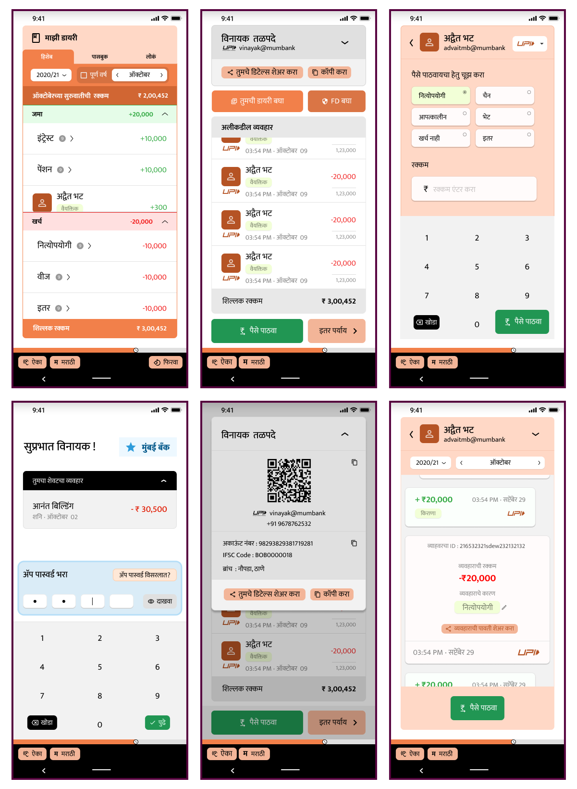

The project employed an iterative user-centered design process, adapting to the challenges posed by Covid-19 restrictions. We prototyped and evaluated the designs across three versions and four iterations, each based on user feedback. The initial design focused on key tasks like logging in, checking balance, reviewing statements, and conducting transactions, prioritizing simplicity and clarity. Due to the pandemic, remote and socially distanced interviews were conducted using specialized software and hardware setups.

The evaluations involved elderly users and those with lower education levels, utilizing heuristic evaluations, localization in Hindi and Marathi, and formative evaluations. The team incorporated interfaces for browsing transactions, training videos, and in-app audio prompts based on user feedback. A card sorting exercise was conducted to understand transaction categorization better. The final design was evaluated through a summative evaluation with users of varying ages and education levels.
